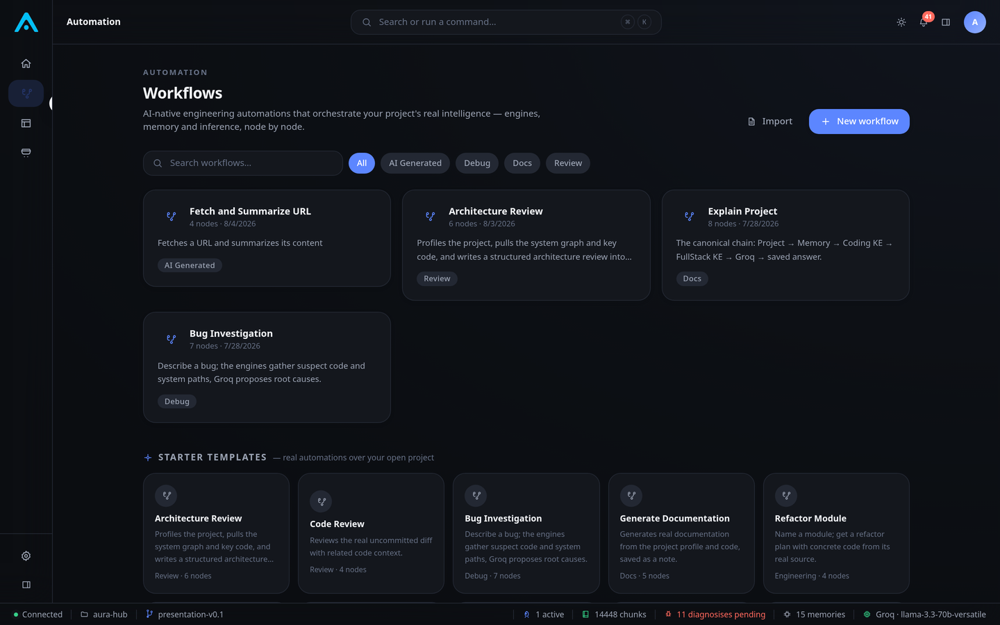
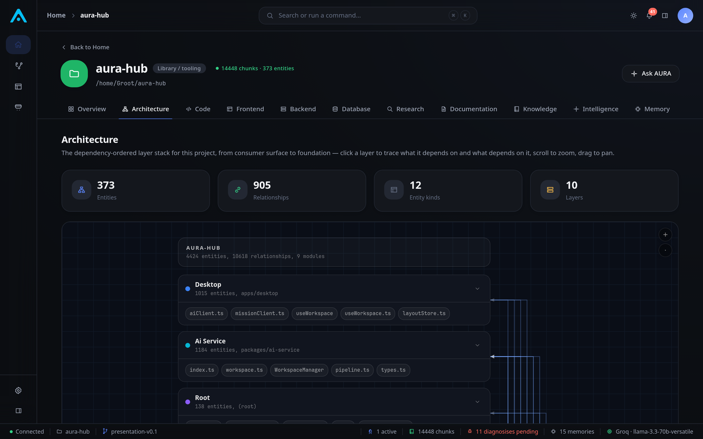

Bring your own key. Every provider, first class.
AURA has no built-in model and no hidden API account. Connect any of 11 providers — OpenAI, Anthropic, Gemini, Groq, Mistral, Cerebras, Kimi, NVIDIA, OpenRouter, Novita, or Qwen — and every feature in the platform works identically, automatically, because they all route through the same provider-agnostic pipeline.

Natural language becomes a real, runnable graph.
Describe an automation in plain language and the AI Workflow Builder generates a validated node graph against the platform's real node registry — source nodes, knowledge engines, generation, logic, and real actions like save-memory, shell commands, and HTTP requests. Nothing is simulated.

Multi-step engineering work, planned and executed for real.
Describe a real goal and AURA grounds the plan in the project's real health score, architecture, and change hotspots — then executes it as a dependency-aware DAG with checkpoints, execution waves, and a critical path, never a task without explicit approval.

A structural understanding of the codebase, not a text index.
AST-based static analysis builds a real knowledge graph — god-node detection, community structure, cross-file relationships — incrementally updated as the project changes, and queryable by every AI feature in the platform.
